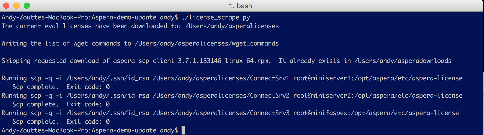

license_scrape.py
A tool to help manage temporary/expiring licenses and ease downloads of new GA builds.
Requirements:
- Must run on a system with python 2.7 installed in /usr/bin/python
- To transfer the new temporary liceenses out, there must be SSH keys between this the execution system and the Aspera servers.
Functionality
Identify this months keys for downloading Aspera pacakges
Download licenses
- Download the license zip file from https://license.aspera.us/evals
- Unzip that in ~/asperadownloads (be default)
- Create predictable names for the license files. Meaning that 76912-P2P-unlim.eval.aspera-license would be renamed to P2P1 and license 76913-P2P-unlim.eval.aspera-license would be renamed to P2P2. With this, we can know which license goes to which server and not send the same license to two different servers that might need to use Aspera between themselves.
Work with the packages
- Build a standalone wget command for the defined packages. The SA's can use these strings to download content. They can also use these keys (substituting the customers keys) to download new content on customers sites.
- Automatically download any packages that are desired to maintain a software repository.
Copy licenses to identified servers
- I started with Ansible for this task, but found that I could implement it easier with plain scp.
Your Customization
- Search for the tag CUSTOM. All the sections where you will generally need customizations will include that tag.
- Of course, you are free to customize anything else!
- If someone knows how to take a Shares, Faspex or Console license and add that to a demo server from command line, let me know and I will add that.
Future work
- Anything that the SA team agrees is needed.
- Someone better with Ansible might knows ways to make that really help the distribution of files
- Automatic upgrades are possible if those are viewed as desirable.
Location
Screenshot
